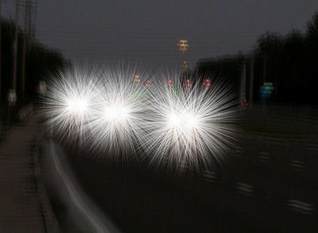

In November 2016, the FDA announced results of a new LASIK study. FDA official, Malvina Eydelman, M.D., summarized the study findings saying, "Given the large number of patients undergoing LASIK annually, dissatisfaction and disabling symptoms may occur in a significant number of patients." Up to 46 percent of participants who had no visual symptoms before surgery reported visual symptoms such as halos, starbursts, glare, and ghosting at three months after surgery.
A survey of physicians who underwent laser eye surgery from 2000 to 2012, which was published in the March 2014 issue of the Journal of Cataract and Refractive Surgery, exposed the following rates of post-surgical adverse effects reported by physician-respondents: "glare (43%), halos (41%), and [trouble] seeing in dim light (35.2%)." Source: Mamalis N. Laser vision correction among physicians: "the proof of the pudding is in the eating". J Cataract Refract Surg. 2014 Mar;40(3):343-4.
A meta-analysis of Summaries of Safety and Effectiveness for the twelve lasers approved from 1998 through 2004, including newer custom wavefront technology, found that six months after LASIK, 19.3% of patients report night-driving problems that are worse, much worse, moderately severe, or severe. (Bailey et al, 2007)
Patients who experience night vision problems after LASIK should file a MedWatch report with the FDA online. Alternatively, you may call FDA at 1-800-FDA-1088 to report by telephone, download the paper form and either fax it to 1-800-FDA-0178 or mail it to the address shown at the bottom of page 3, or download the MedWatcher Mobile App for reporting LASIK problems to the FDA using a smart phone or tablet. Read a sample of LASIK injury reports currently on file with the FDA.

The LASIK industry refuses to acknowledge the severe impact of night vision disturbances on patients' quality of life after LASIK. LASIK surgeons downplay this adverse effect of LASIK, using terms like "symptoms" or "side effects", and telling patients these visual disturbances will resolve with time.
Regardless of how this issue is downplayed by LASIK industry representatives, the truth is that night vision disturbances after LASIK occur frequently and may be permanent and incapacitating.
Four years prior to the original FDA approval of LASIK, Dr. Leo Maguire forewarned of the threat to public health posed by impaired night vision following refractive surgery. The following is an excerpt from an editorial published in the March, 1994 edition of American Journal of Ophthalmology:
“I hope the reader will now understand how a patient may have clinically acceptable 20/20 visual acuity in the daytime and still suffer from clinically dangerous visual aberration at night if that patient’s visual system must cope with an altered refractive error, increased glare, poorer contrast discrimination, and preferentially degraded peripheral vision. People die at night in motor vehicle accidents four times as frequently as they do during the day, and these figures are adjusted for miles driven. Night driving presents a hazardous visual experience to adults without aberrations. When we discuss aberration at night we are considering a possible morbid effect of refractive
surgery.” Source: Maguire LJ. Keratorefractive surgery, success, and the public health. Am J Ophthalmol. 1994 Mar 15;117(3):394-8.
The video below illustrates how a LASIK patient with night vision problems may see the roadway at night.
Quality of Life Impact of Night Vision Disturbances
LASIK injury reported to the FDA 1/26/2014:
"After having LASIK eye laser surgery, I feel that my vision at night has become terrible. I have also noticed I feel the need for more light to see accurately that the average person. I feel that the lights indoors are never bright enough and I need more light generally to see well." Source
LASIK injury reported to the FDA 1/24/2014:
"I had Customvue LASIK surgery on [redacted by FDA] 2013 with Dr. [redacted by FDA] with [redacted by FDA]. I experienced normal post-surgery results for about 72 hours such as blurred vision, pain, dry eyes. As my daytime vision improved, my night vision did not. My doctor continued to see me, I went to every scheduled f/u visit and I was continuously told I would improve, it was just taking me longer than average. At night outdoors, in low lighting indoors, or when there are different light levels in a room, I cannot see clearly. When night driving, the starbursts combined with halos on all light sources or reflective sources are so large and distorted, they overlap the regular objects I should be seeing, i.e., a car, person walking, front door of a house, curb, road sign etc. Indoors, if there are recessed lights in a ceiling, hanging pendant lights over a kitchen island, chandelier, the lights are overly enlarged that I do not see the objects around the light source. I cannot make our peoples faces in a dimly lit room as the lights overtake the whole area. I cannot see in a restaurant if there are chandeliers, wall sconces or even a candle on the table. All those light sources starbursts are so large they hide everything"... Continue reading
LASIK injury reported to the FDA 12/23/2013
"I got LASIK a few years ago and now have worsened dry eyes, and my night vision is significantly impaired. I don't experience severe halos, but enough to make a difference. The worst however is lowered perception of shades of gray/darkness, which makes it more difficult to see clearly in low light conditions." Source
Posted on a patient bulletin board by a patient suffering from night vision disturbances:
"I can tell you, that glare, starburst, haloes and loss of night vision are not minor complications. They are life altering! After you have suffered with them long enough, you may not recognize yourself. The panic, fear and depression I get from this is staggering. I am truly amazed that I have been able to continue with my "so-called" life. The human spirit is amazing at what it can endure....but I will tell you this...if they say that adversity will make you stronger.. there is some truth to that... but it is only a half-truth in something like this..... because... although I do not show it outwardly... I am a broken person in my heart and soul... I don't enjoy life.. I endure it...Everything I do is made difficult by having damaged vision....no amount of positive thinking can change that".
LASIK patient, Mitch Ferro, testifying before the FDA Ophthalmic Devices Panel in July, 1999:
“When I drive to work every day, fighting the DC traffic I hear lots of great advertisements including the advertisements from the center that did my surgery talking about 95, 98 percent, whatever the percentage is of their patients who achieve 20/20 or 20/40 or better vision, and they consider that a success. I am considered a success by that criteria as well. However, in anything but extremely bright daylight I am visually impaired by starbursts, halos, multiple ghost images because of LASIK done on my 8-millimeter pupils…"
Letter to the Editor, Journal of Cataract & Refractive Surgery, Vol 23, December 1997 from a LASIK patient:
"My refractive error in both eyes was -9.0 diopters (D). My pupils are very responsive and readily open to 9.0 mm in low light. The ablation zone used in my case was 5.5 mm. Presently, my vision in moderate to low light is extremely hazy, with a marked loss of contrast and detail. Halos, starbursts, and glare add to the side effects, which together make it impossible for me to drive during evening and early morning hours. I am a teacher and have dramatically scaled back my involvement in after-school activities because of my fear of having to drive at dusk and dawn. I now avoid attending theater performances, movies, concerts, church services, and dinner parties due to my inability to see well under low-light conditions. I have grown fearful of the night and feel as though I am its hostage. Psychologically, LASIK has proven to be a devastating choice for me...
Regardless, I do not believe there exists a shared set of guidelines used to determine the eligibility of potential patients who, like myself, have both large pupils under low-light conditions as well as moderate to severe myopia. It is for the sake of these potential patients that I ask you to consider reporting on my case and others like it. Additionally, I ask the favor that my case be addressed because of my desperate need to learn of any and all options that might allow me to again live a normal life."
CBC News: One-third of laser eye patients experience night vision problems: study
COLUMBUS, OHIO - Nearly a third of patients undergoing laser eye surgery, using the LASIK method, reported problems seeing at night, according to a new study. Scientists at Ohio State University analysed data from 605 patients who had the surgery six months earlier. One out of three reported vision problems including seeing halos, starbursts and glare surrounding lights — problems that can affect a person's night vision. Read the full article
Medical studies report large numbers of LASIK patients experience night vision disturbances:
Bilateral Comparison of Conventional Versus Topographic-guided
Customized Ablation
for Myopic LASIK With the NIDEK EC-5000
Journal of Refractive Surgery Vol. 22 No. 7 September 2006
Chi-xin Du, MD; Ya-bo Yang, MD; Ye Shen, MD; Yang Wang; Paul J. Dougherty, MD
"As many as 30% of patients who undergo LASIK experience night vision problems such as glare and halo".
Pupil measurement using the Colvard pupillometer and a standard pupil card with a cobalt blue filter penlight.
J Cataract Refract Surg. 2006 Feb;32(2):255-60.
Chaglasian EL, Akbar S, Probst LE.
“Chaidaroon and Juwattanasomran conclude that night-vision disturbances are often preventable, especially if patients with higher amount of myopia are accurately identified as having a large scotopic pupil. Newer wavefront technologies demonstrate that spherical and coma aberrations increase with increasing pupil size. Smaller pupils are associated with improved visual acuity in patients after refractive surgery and in untreated patients. Night-vision disturbances have been reported in 25% of 35% of patients after photorefractive keratectomy (PRK) and LASIK using a 6.0 mm ablation zone and in 65.6% of patients treated with a 5.0 mm ablation zone in PRK.”
Topography-guided CATz Versus Conventional LASIK for Myopia With the NIDEK EC-5000: A Bilateral Eye Study
Journal of Refractive Surgery Vol. 22 No. 8 October 2006
Mansoor A. Farooqui, FRCSEd; Abdul Rahman Al-Muammar, MD, FRCSC
“Night vision complaints such as glare, halos, and difficulty in driving at night have been reported in 16% to 40% of patients after LASIK surgery. In a survey of patients dissatisfied with refractive surgery results, 43.5% reported glare and night vision disturbance as the reason for their dissatisfaction.”
Night Vision Disturbances after Successful LASIK Surgery.
Br J Ophthalmol. 2007 Feb 21
Villa Collar C, Gutierrez R, Jimenez JR, Gonzalez-Meijome JM.
Clinica Oftalmologica Novovision, Spain.
“According to their description, NVD include glare disability, decrease in visual contrast sensibility and image degradation. In a retrospective study, Jabbur et al, documented NVD as a leading cause of complaint for patients undergoing different refractive surgical procedures, with 43.5% of patients having such difficulties.”
Six-year follow-up of laser in situ keratomileusis for moderate
and extreme myopia using a first-generation excimer laser and microkeratome.
J Cataract Refract Surg. 2003 Jun;29(6):1152-8.
Sekundo W, Bönicke K, Mattausch P, Wiegand W.
PURPOSE: To evaluate objectively and subjectively the long-term outcome of laser in situ keratomileusis (LASIK) in patients with high and very high myopia.
SETTING: Department of Ophthalmology, Philipps University, Marburg, Germany.
METHODS: Thirty-three eyes of 19 patients were followed for a mean of 76 months (range 50 to 84 months) after primary LASIK using the Keratom I excimer laser (Schwind) and the ALK microkeratome (Chiron). Refraction, glare, pachymetry, corneal topography, and tear-film secretion and stability were measured. At the last examination, patients also answered a 14-item questionnaire.
RESULTS: Preoperatively, the mean spherical equivalent was -13.65 diopters (D). At 1 year, it was -0.25 D and after 6 years, -0.88 D. Fifteen percent of eyes lost > or =2 lines of best spectacle-corrected visual acuity (BSCVA), and 9% gained > or =2 Snellen lines. At the end of the study, 46% of eyes were within +/-1.0 D of the attempted corrected and 88% were within +/-3.0 D. There were 5 microkeratome-associated complications; 3 resulted in loss of BSCVA. The latest pachymetry showed a mean corneal thickness of 498.5 microm (range 396 to 552 microm). There were no cases of keratectasia. Seventy-five percent of patients noted an increase in their quality of life. Seventy-one percent were satisfied with their postoperative visual acuity; however, 75% noticed glare and halos at night.
CONCLUSIONS: Laser in situ keratomileusis correction of very high myopia did not cause keratectasia in the long term provided the corneal thickness was respected. A flap thickness setting of 130 microm with a first-generation microkeratome resulted in a high number of cut failures. Most patients were happy with the results despite a modest level of accuracy and glare.
From the full text:
“On a scale of 0 to 10 for current satisfaction with one’s visual acuity, the mean score was 5.7. Scores from 0 to 4 were considered “being unhappy”; 29% of patients were not happy with their UCVA. This percentage was smaller than that immediately after surgery, 35%. Eighty-one percent noticed an improvement in their UCVA after surgery as opposed to the time before LASIK. Twenty-eight percent of patients described their BSCVA as “worse than before surgery” and 72%, as better or unchanged. The preoperative refraction of patients who were dissatisfied with their BSCVA was –12.0 D.”
“There were no microkeratome-associated complications in this group; however, 2 eyes of the same patient developed severe dry-eye disease and peripheral epithelial ingrowths and 2 eyes had decentrations of 1.5 mm and 2.0 mm. After almost 7 years, 75% continued to complain of ghosting images and/or halos. Patients who graded their halos between 8 and 10 also felt a decline in their BSCVA (see above) and had irregular flaps due to cut failures or a preoperative refraction greater than –15.0 D. However, 81% of all patients questioned said they would recommend the surgery to friends and would have the surgery again.”
“Our study highlights the problems of quality of vision. Often, Snellen acuity, particularly after enhancements, is given as a measure of success.11, 12 Nevertheless, 75% of our patients have glare at night, with the worst symptoms in patients who had decentrations, cut problems, or treatments over –15.0 D with subsequent flat corneas down to 32.5 D in 1 extreme case. Our decentration rate of >0.5 mm was 15%. This relatively high number can be the result of using retrobulbar anesthesia and pilocarpine in contrast to patient self-fixation supported by the eye-tracker technology of modern lasers. Objectively, virtually all patients in this study had poor mesopic vision. Moreover, our study leaves no doubts that this problem continues to persist in the long term and possibly forever.”
“A question still to be answered is why 81% of patients appeared to be quite happy with the overall results when all of them had poor night vision.”
Comparison of high order aberration after conventional and
customized ablation in myopic LASIK in different eyes of the same patient
J Zhejiang Univ Sci B. 2007 March; 8(3): 177–180.
Chi-xin Du,† Ye Shen,†‡ and Yang Wang
“It is well known that up to 30% of patients experience night vision problems after LASIK such as glare and halo, decreased contrast sensitivity, and poor subjective vision despite excellent objective uncorrected visual acuity (UCVA).
Disclaimer: The information contained on this web site is presented for the purpose of warning people about LASIK complications prior to surgery. LASIK patients experiencing problems should seek the advice of a physician.